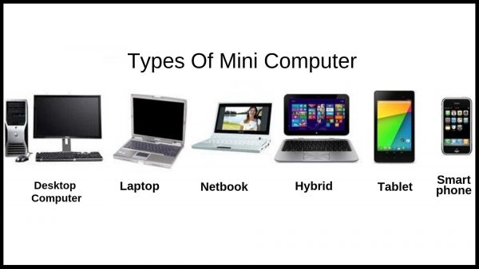

A computer is a machine that can be instructed to carry out sequences of arithmetic or logical operations automatically via computer programming. It is an electronic device for storing and processing data, typically in binary form, according to instructions given to it in a variable program. Modern computers have the ability to follow generalized sets of operations, called programs. These programs enable computers to perform an extremely wide range of tasks.
Supercomputer is a broad term for one of the fastest computers currently available. Supercomputers are very expensive and are employed for specialized applications that require immense amounts of mathematical calculations (number crunching). For example, weather forecasting requires a supercomputer. Other uses of supercomputers scientific simulations, (animated) graphics, fluid dynamic calculations, nuclear energy research, electronic design, and analysis of geological data (e.g. in petrochemical prospecting). Perhaps the best known supercomputer manufacturer is Cray Research.
It is a midsize computer. In the past decade, the distinction between large minicomputers and small mainframes has blurred, however, as has the distinction between small minicomputers and workstations. But in general, a minicomputer is a multiprocessing system capable of supporting from up to 200 users simultaneously.
It is a type of computer used for engineering applications (CAD/CAM), desktop publishing, software development, and other types of applications that require a moderate amount of computing power and relatively high quality graphics capabilities. Workstations generally come with a large, high-resolution graphics screen, at large amount of RAM, built-in network support, and a graphical user interface. Most workstations also have a mass storage device such as a disk drive, but a special type of workstation, called a diskless workstation, comes without a disk drive. The most common operating systems for workstations are UNIX and Windows NT. Like personal computers, most workstations are single-user computers. However, workstations are typically linked together to form a local-area network, although they can also be used as stand-alone systems.